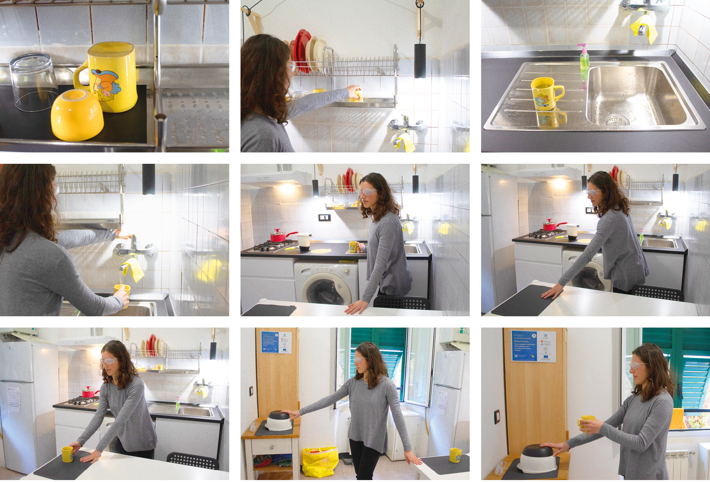
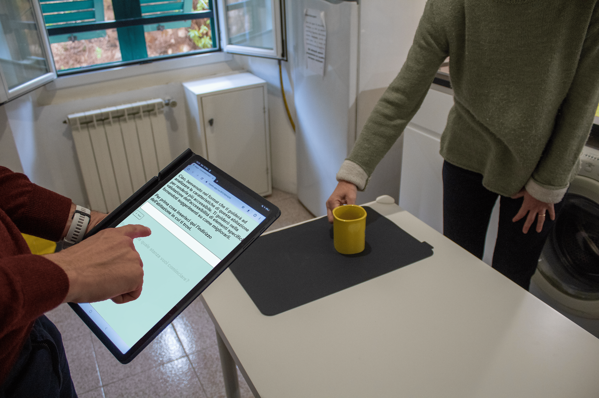

Designing for inclusion
Coordinating inclusive living labs, accessibility protocols, and funded projects focused on visual impairment and domestic autonomy.
Context, Funding & Leadership
Ad’Agio was created to address the challenges of an aging population, focusing on the domestic fragility experienced by seniors with visual impairments. Financed by the Municipality of Genoa through the ZIP – Zena Innovative People project, Ad’Agio was promoted by the PENELOPE enterprise network (Teseo and David Chiossone Foundation) in collaboration with the Department of Architecture and Design (UNIGE-DAD) at the University of Genoa and Humana Vox.
As a researcher and coordinator within the UNIGE-DAD team, I managed a complex, structured workflow, overseeing strict deadlines and project milestones. This required strong mediation between institutional partners, therapists, and developers, ensuring all objectives were successfully met on schedule.
Methodology & Participatory Research
The project adopted a participatory research methodology based on the living lab model. The sample involved 30 senior users with visual impairments or fragile sight, selected in partnership with occupational therapists and prominent local institutions such as the David Chiossone Foundation—a historically renowned center of excellence dedicated to the assistance, rehabilitation, and social inclusion of visually impaired individuals.
Through immersive simulations inside a model house in Genoa (Via del Cavalletto)—wearing simulation devices to experience reduced vision firsthand—our multidisciplinary team evaluated everyday tasks like preparing a cup of tea to optimize safety, spatial orientation, and independent living.

Prototyping & Demo Testing
The core objective of the project was to create a practical, reliable checklist for occupational therapists who regularly visit the homes of patients with visual disabilities. During these home visits, therapists must rigorously evaluate domestic accessibility and identify potential safety hazards. To achieve this, we translated environmental analyses into a decision-tree environmental checklist categorized into three priority levels (danger, attention, suggestion). To make the tool easily accessible in mobility during home inspections, I coordinated the creation of an interactive digital prototype optimized for mobile use.
The prototype was iteratively tested within the model house, simulating real-world usage by occupational therapists during home interventions and ensuring a versatile tool adaptable to multiple housing contexts.

Results & Impact
The success of Ad’Agio highlights my core competencies in inclusive design, stakeholder management, and field research methodologies. By deeply focusing on accessibility and universal design principles, and through direct, empathetic interaction with real users experiencing severe sensory disabilities, we bridged clinical needs with practical digital tools.
Key outcomes include the delivery of a validated accessibility protocol and a mobile checklist currently deployed in visual rehabilitation, alongside the specialized training of occupational therapists from the David Chiossone Foundation—proving how human-centered coordination can translate complex social challenges into concrete, scalable solutions.